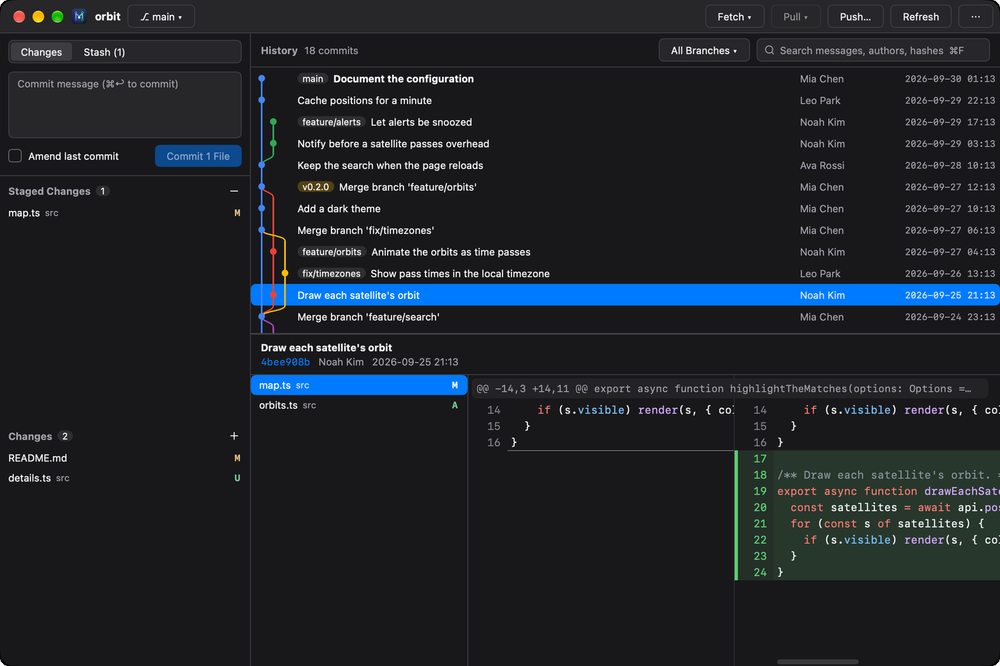
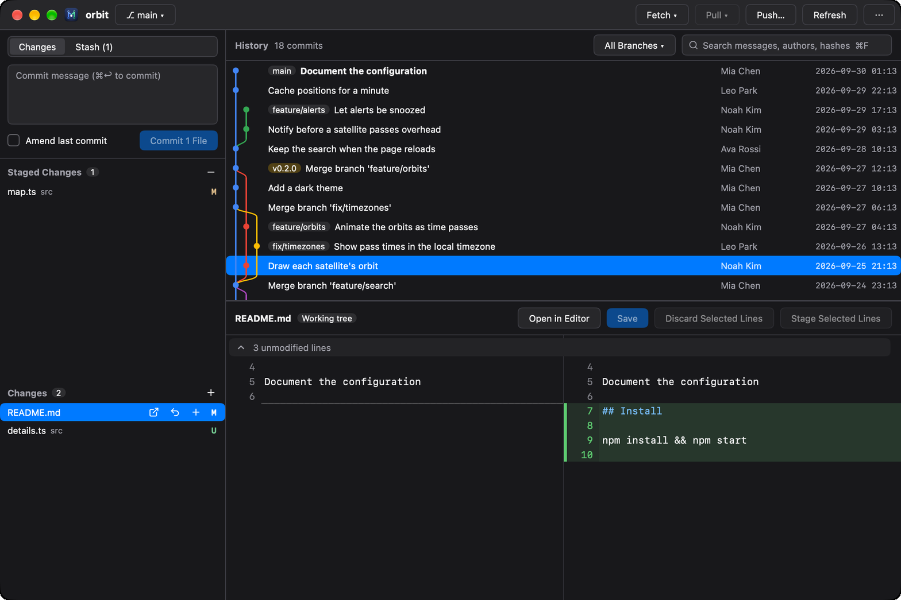
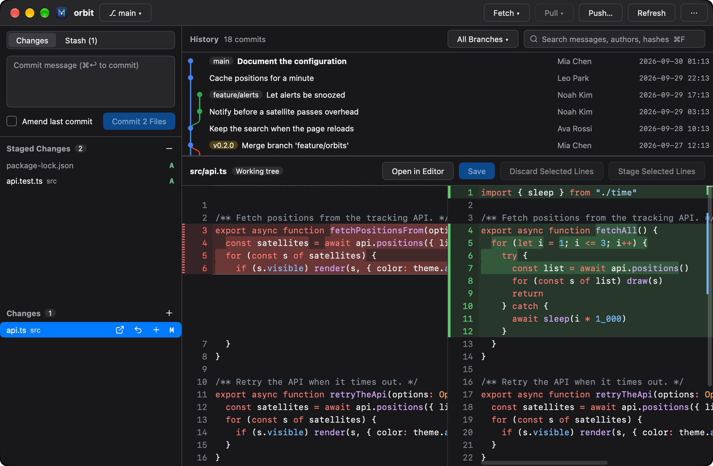
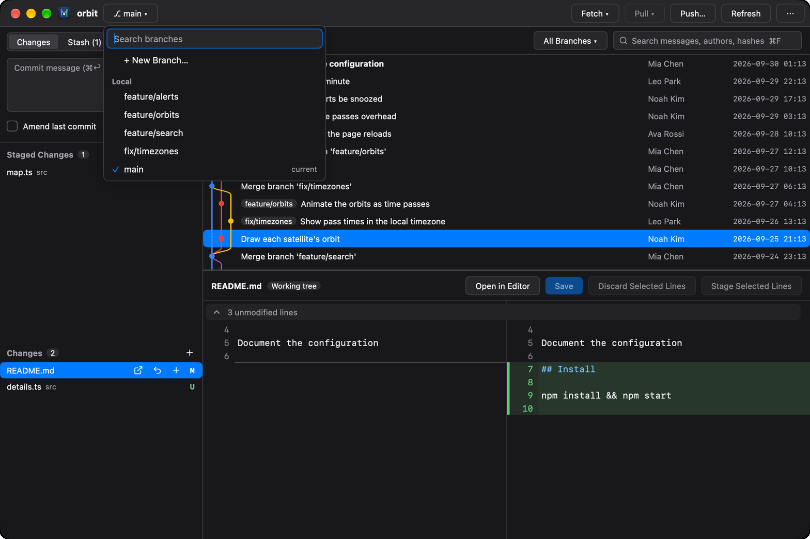
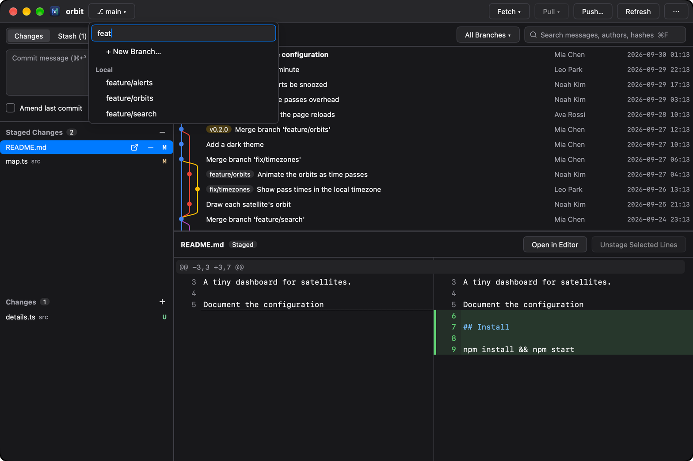
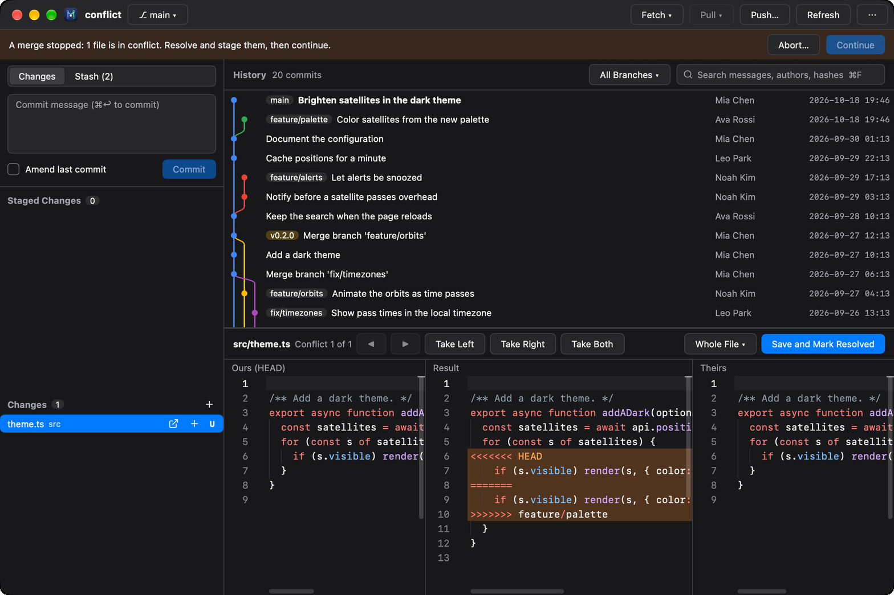
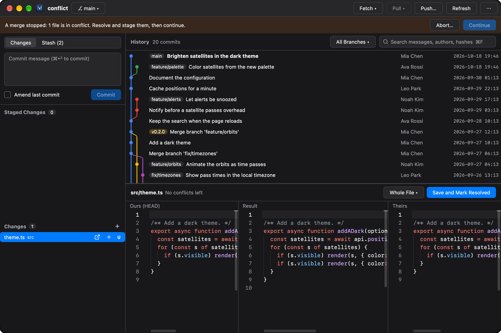
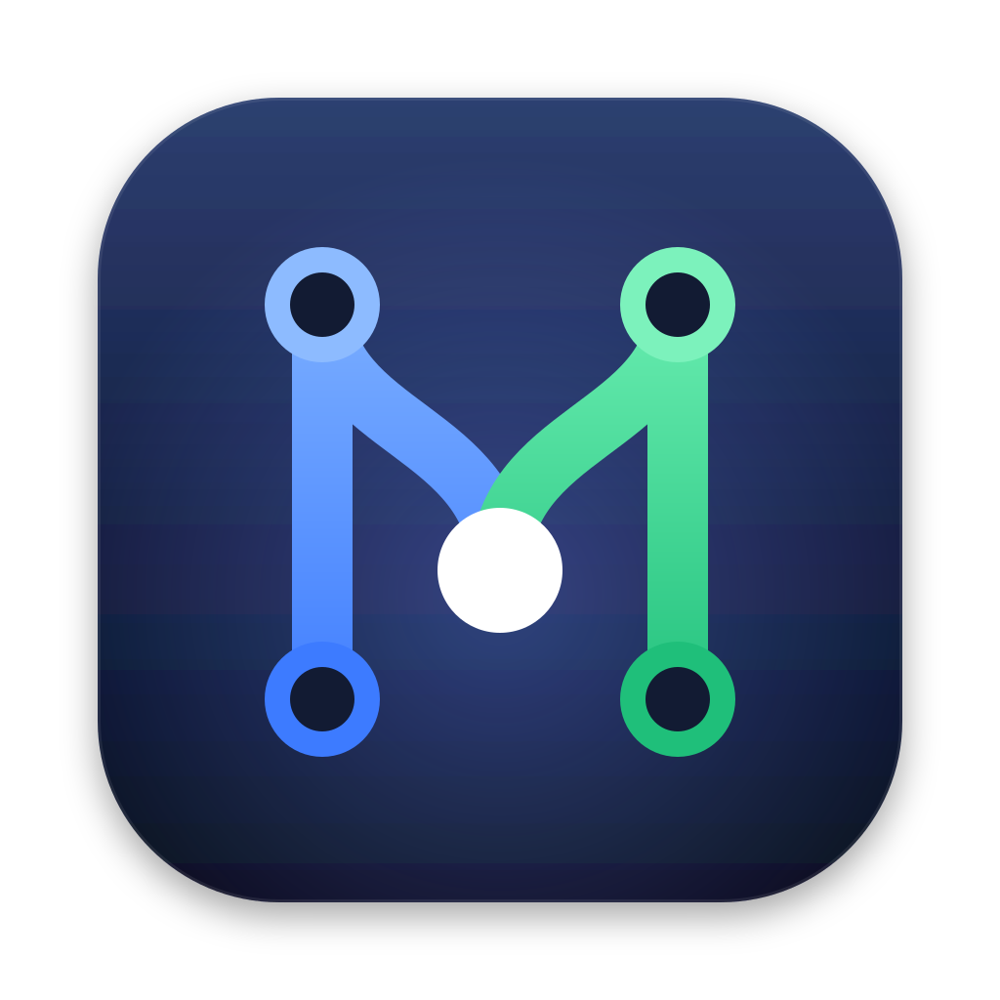

MyGit
A light, native git client
a1c3f09git open
Drop a folder to open it







Choose a commit or a change to see its diff
ffefeafeat
3f9c1e0git log --graph
Every branch, with its graph
b81d2a4git add -p
Stage files, changes, or single lines
5c70df3git switch
Search, switch, merge or rebase
88caafbgit merge
Resolve conflicts side by side
e4a17c9perf: drop the JVM
A sixth of the memory
IntelliJ-based client
0 MB
Memory with a repository of 20,000 commits open

MyGit
macOS
Windows
Linux
English · 简体中文
github.com/Binaryify/MyGit